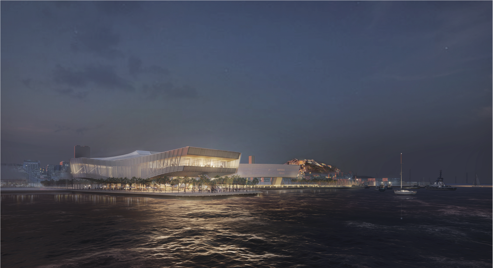
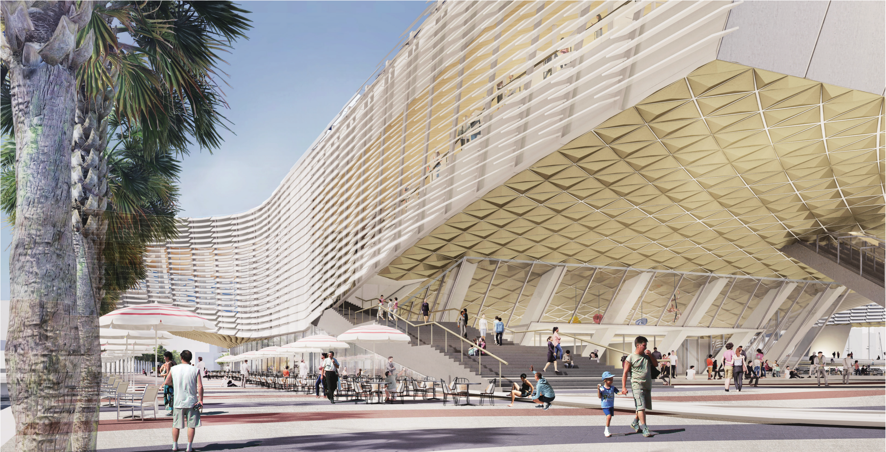
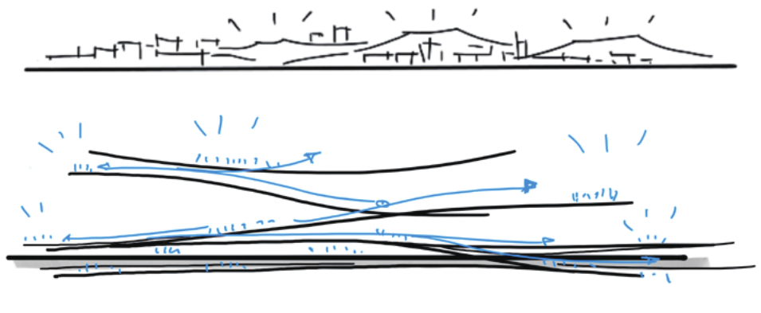
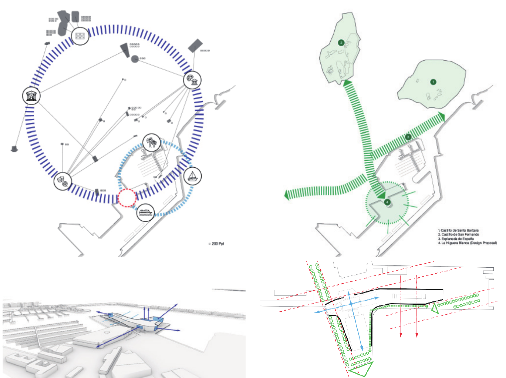
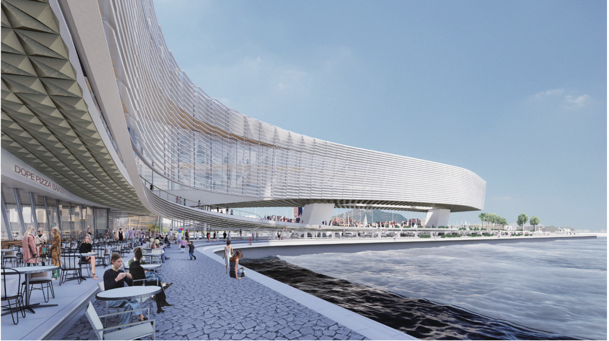
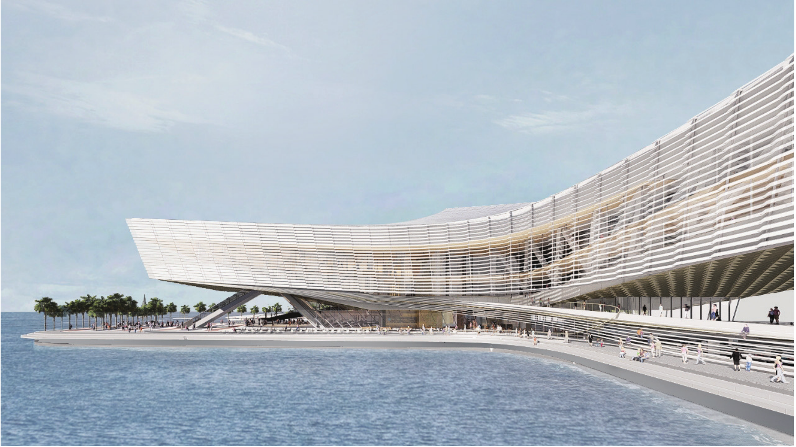
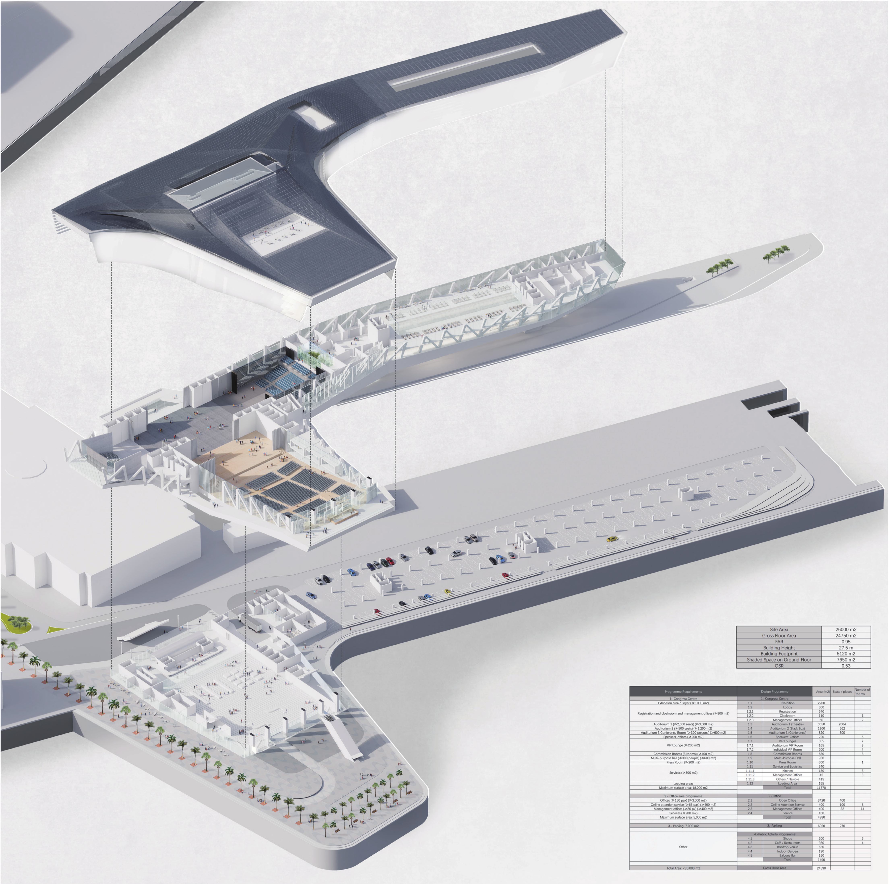
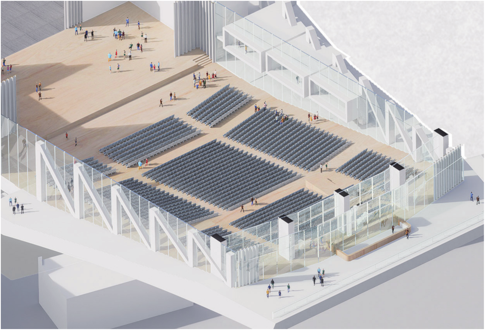
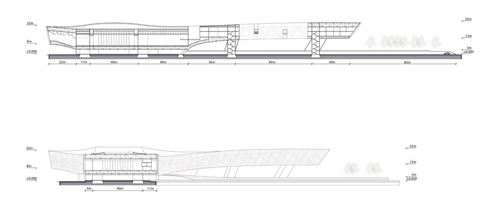

LA HIGUERA BLANCA
Proposal for Alicante Congress Centre
For this proposal of the new Congress Centre of Alicante, our approach is inspired by the natural icons of Alicante, and the vibrant public life that is created around them. We imagine a new icon that connects these existing places and that shelters public life. we imagine one can find a comfortable, shaded, welcoming place under our White Fig Tree La Higuera Blanca.

Under the Fig Trees
Like one can sit under the old fig trees at the Plaça Gabriel Miro, walk amongst the palms on the Explanada de España; we imagine one can find a comfortable, shaded, welcoming place under our White Fig Tree La Higuera Blanca.





1+1+1>3 Strategy

Interior Spaces

Main Hall / Offices
